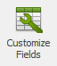
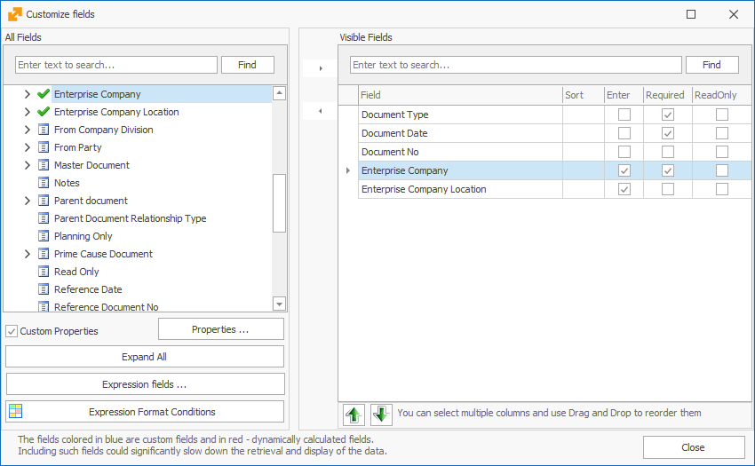
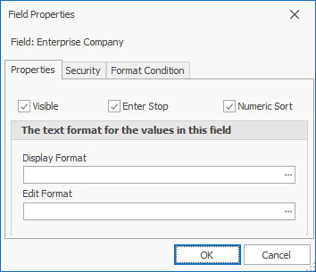
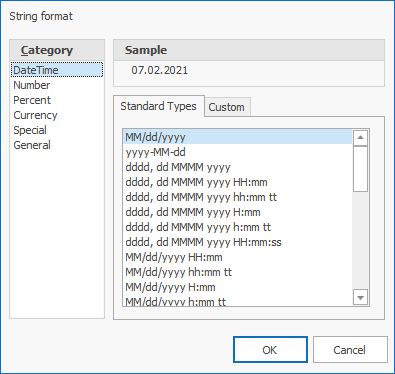
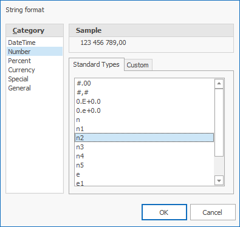

Customize fields
Use the customize fields form to edit fields, hide them or make them visible, or customize their settings in a certain form panel.
Open the form with the  button in the View tab of the command ribbon for the current form or by right-clicking on the panel which will open a context menu.

The fields that appear in the form are located on the right side.
Reposition the fields around the form in the desired order with the Up  and Down buttons.
and Down buttons.
Click the  button to close the customize fields form.
button to close the customize fields form.
All the fields that are present in a certain panel are shown on the left side.
The tick shows the fields, displayed in the panel when the form opens.
shows the fields that are not displayed.
The button opens the expression fields form.
The opens all the groups and shows the existing fields.
Example : The fields Enterprise company and Enterprise company location are to expand with the use of this form without having to click on the menu displaying them.
Open Field properties by clicking the  button.
button.

The ‘Visible’ checkbox shows whether the field is visible for the current form. The ‘Enter stop’ shows whether the cursor stops in the field after pressing ’enter’ or it would reposition to the next field. The ‘Numeric sort’ indicates whether the field will be sorted numerically or by a string.
The text formats for the values in this field are:
Display format
Shows how the field displays into the form.
Click the  button to open the String format.
button to open the String format.

The Category section on the left has the unit categories for the field such as ‘number’ or ‘currency’.
The right part is separated into three panels – Sample, Standard types and Custom:
- Sample - the visual representation of what is going to be inside the field
- Standard Types - Encoded unit standards for the settings. The content of 'Sample' will change right after clicking on the standard type of choice.
- Custom - types set by the customer. Used the same way as the Standard.
Example: A number is typed out with three digits after the decimal separator. It must be displayed with 2 symbols only. Open String format. Select the 'Number' category. Select 'n2' Standard type. Click 'OK'.

Edit format
In the field we can directly set a mask to specify how to visualize the field while editing it. Using the edit form you can adjust the format of the document number field.
Example:
MaskType = Numeric, EditMask = 0000000000.
Its behavior is as follows - when we click in the field the marker is finally positioned and to the left of it are the numbers in the format for example 0000004568, or 0000000000 if the field is empty.
When we start entering numbers from the keyboard, it replaces the existing ones from right to left of the marker.